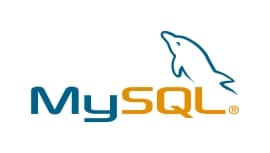

Nesta disciplina iremos trabalhar com criação sistemas Web, o objetivo principal é desenvolver a habilidade para criar sistemas Web, sabendo criar Layout e Design das páginas, trabalhando com a melhor Experiência e Usabilidade dos Usuários, desenvolvendo a interação com o usuário, recebimento e envio de dados, transações e acessos pessoais.
HTML
Sigla para HyperText Markup Language — Linguagem de Marcação de Hipertexto —, o HTML é o componente base da web. Isso quer dizer que ele permite a construção de websites e a inserção de novos conteúdos, como imagens e vídeos, por meio dos hipertextos.
CSS
O CSS é uma linguagem de folhas de estilos que é utilizada para definir como os documentos escritos na linguagem de marcação (HTML ou XML) devem ser apresentados em termos de formatação, de layout. Em um cenário ideal, enquanto o HTML é usado para estruturar os conteúdos, o CSS é utilizado para formatá-los.
PHP

O PHP (um acrônimo recursivo para PHP: Hypertext Preprocessor ) é uma linguagem de script open source de uso geral, muito utilizada, e especialmente adequada para o desenvolvimento web e que pode ser embutida dentro do HTML.
MySQL
O MySQL cria um banco de dados para armazenamento e manipulação de dados, definindo a relação de cada tabela. Clientes podem fazer solicitações digitando comandos SQL específicos no MySQL. A aplicação do servidor responde com a informação solicitada fazendo aparecer no cliente.
Adryan Maikel